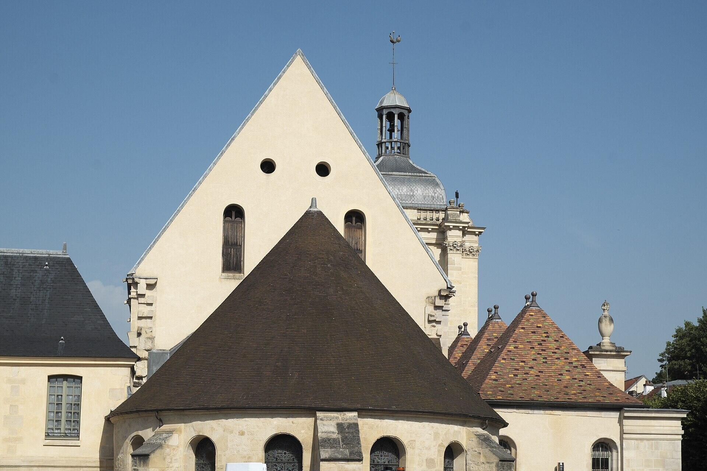
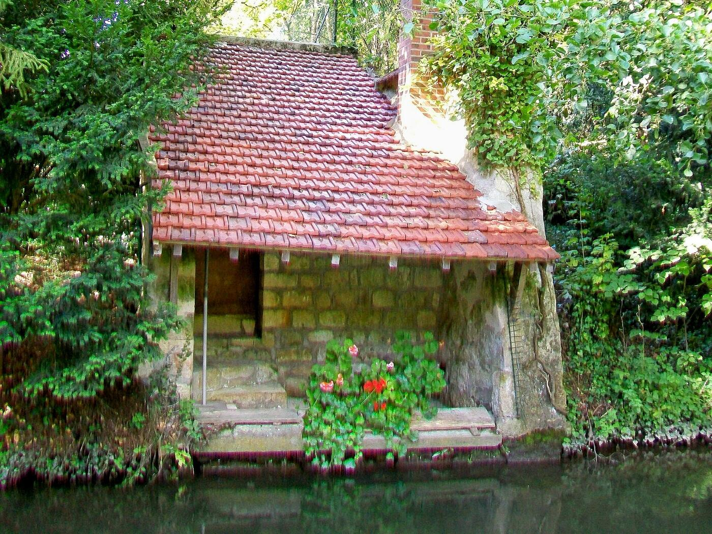

Notre quartier, au fil de la Viosne
Habiter, partager, protéger : bienvenue chez les habitants du quartier Notre-Dame Viosne.
Chargement de l’agenda…
Explorer le site
Tout sur la vie du quartier
Un quartier, une rivière, des voisins. Choisissez par où commencer.
L’association
Qui nous sommes, notre objet, notre bureau.
Découvrir →Le quartier
Histoire, patrimoine, la Viosne et les lieux repères.
Découvrir →Nos actions
Cadre de vie, dialogue avec la Ville, projets.
Découvrir →Agenda
Réunions et rendez-vous, archives.
Découvrir →Galerie
Le quartier en images.
Découvrir →Infos utiles
Ville, agglomération, signalements, démarches.
Découvrir →Repères
Quelques chiffres autour de nous
Ces chiffres situent le quartier dans sa ville. Les chiffres propres à l’association (adhérents, événements…) s’ajouteront ici dès qu’ils seront communiqués.
Dernières nouvelles
Actualités du quartier

Rejoignez-nous
Un quartier, ça se vit et ça se défend ensemble
Que vous habitiez ici depuis toujours ou depuis hier, votre voix compte pour le cadre de vie, la mixité sociale et l’environnement du quartier.